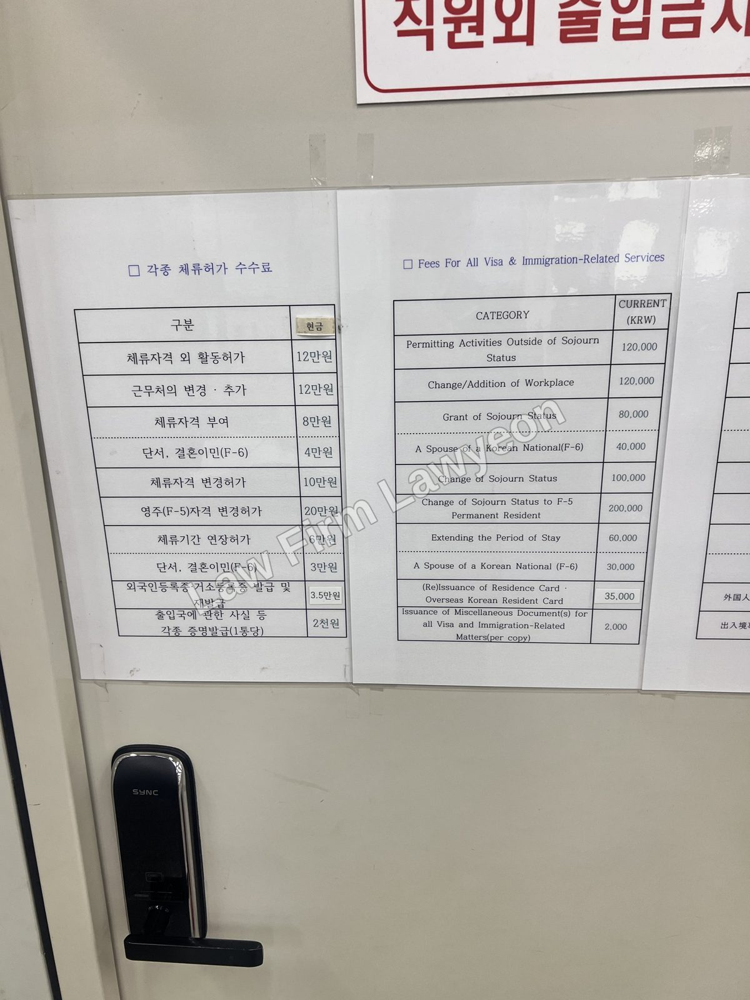

"범칙금만 내면 끝나는 거 아닌가요?" 아닙니다. 범칙금을 냈다고 체류 문제가 끝나지 않습니다. 금액이나 횟수가 기준을 넘으면, 출입국은 체류를 불허하고 내보냅니다. 그 기준도, 남을 수 있는 예외도 정해져 있습니다.

범칙금이 벌금과 같은 건가요?
다릅니다. 벌금은 형사처벌입니다. 검찰·법원이 매깁니다.
범칙금은 행정 처분입니다. 출입국·외국인청이 출입국법 위반에 매깁니다. 허가 없는 취업(자격외활동), 신고의무 위반, 불법체류 같은 위반이 대상입니다.
트랙은 다르지만 결과는 닿습니다. 벌금이 쌓이면 출국으로 이어지듯, 범칙금도 일정 기준을 넘으면 체류 자체가 불허됩니다.
범칙금 얼마부터, 몇 번부터 출국 대상인가요?
출입국은 범칙금 처분을 받은 외국인을, 다음에 해당하면 체류 불허 후 출국 대상으로 봅니다.
- 초범으로 범칙금 500만 원 이상인 경우
- 최근 5년 이내 합산 범칙금이 700만 원 이상인 경우
- 최근 3년 이내 3회 이상 범칙금 처분을 받은 경우 — 금액과 무관하게 출국명령(3진 아웃)
- 불법체류를 하다 단속에 걸린 경우 — 강제출국
벌금형과 선이 다르다는 점을 헷갈리면 안 됩니다. 초범 기준이 벌금은 300만 원, 범칙금은 500만 원입니다. 합산도 벌금은 500만 원, 범칙금은 700만 원입니다.
| 구분 | 기준 |
|---|---|
| 초범 | 범칙금 500만 원 이상 |
| 합산 (5년) | 700만 원 이상 |
| 횟수 | 3년 내 3회 이상 (금액 무관, 출국명령) |
| 불법체류 단속 | 강제출국 |
기준을 넘겨도 한국에 남을 수 있나요?
원칙은 체류 불허 후 출국입니다. 그러나 예외가 있습니다. 출입국은 다음 해당자에 대해서는, 사실확인 등 심사를 거쳐 체류를 허가할 수 있습니다.
- 국내에 생활기반이 있는 거주(F-2)·재외동포(F-4)·국민의 배우자(F-6) 자격 — 국익 사유(국민을 고용하고 있는 자, 납세실적이 우수한 자 등)나 인도적 사유(임신·출산·미성년 자녀 양육·질병 등)가 있으면 체류허가
- 무국적자, 국내 출생자 등 출국이 불가능하거나, 국내 생활기반이 확고히 형성되어 출국이 사실상 불가능한 경우 — 체류허가
- 그 밖에 이에 준하는 인도적 사유가 있는 경우
핵심은 이 예외가 자동이 아니라는 점입니다. "가족이 있다", "기반이 있다"는 사실을 출입국이 인정하는 형태로 입증해야 심사를 통과합니다. 같은 처지라도 자료를 어떻게 구성하느냐에서 체류와 출국이 갈립니다.
통고서를 받으면 무엇을 해야 하나요?
범칙금 통고서를 받으면, 통상 15일 이내에 납부해야 합니다. 분할 납부는 되지 않습니다. 내지 않으면 고발되어 형사 절차로 넘어갑니다.
그런데 납부 여부만 문제가 아닙니다. 범칙금과 별개로, 출입국은 체류를 계속 허가할지 다시 심사합니다(사범심사). 이 조사 단계가 결정적입니다.
이때 변호인의 조력을 받으면, 변호인이 출입국 조사에 동행할 수 있습니다. 통역의 오역을 막고, 예외기준에 맞춰 생활기반·가족·국익·인도적 사유를 자료로 정리해 제출합니다.
| 소명 내용 | 제출 자료 |
|---|---|
| 국내 생활기반·가족 | 가족관계증명서, 혼인관계증명서, 자녀 출생·재학 증빙, F-2·F-4 자격 증빙 |
| 국익 사유 | 사업자등록증, 국민 근로자 고용 증빙, 납세 실적 |
| 인도적 사유 | 임신·출산 증빙, 미성년 자녀 양육, 진단서·치료계획서 |
| 정착 안정 | 거주지·재직·소득 자료 |
조사 결과 체류불허·출국조치 처분이 나오면, 이의신청(7일)과 취소소송(90일)으로 다툽니다. 출국을 멈추려면 집행정지를 함께 신청해야 합니다.
강제출국되면 다시 들어올 수 있나요?
출국명령으로 나가면 재입국 제한은 사안에 따라 1~5년입니다. 불법체류 단속으로 강제퇴거되면 최소 5년입니다.
다만 한국인 배우자·미성년 자녀가 있거나 중대한 치료가 필요한 경우 등에는, 제한 기간 중에도 재입국 허가가 예외적으로 인정되기도 합니다. 재입국을 준비한다면, 본인의 처분 내용과 규제 기간부터 확인하는 것이 먼저입니다.
자주 묻는 질문
본 글은 일반적 법률정보이며 개별 사건에 대한 자문이 아닙니다. 출입국 처분은 사안과 시점에 따라 적용이 달라지므로, 본인 상황에 맞는 판단은 상담을 통해 확인하시기 바랍니다. 형사 벌금형 기준은 별도 글에서 다룹니다.